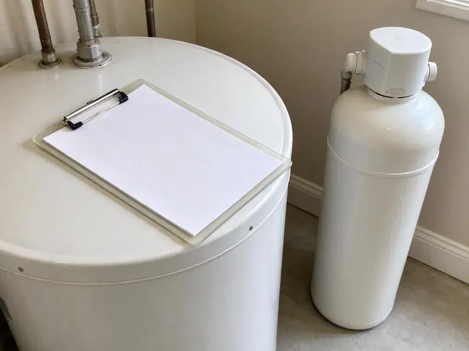

Polybutylene Plumbing Replacement in Vancouver, WA
Gray plastic pipe stamped PB2110 at the water heater? FHN Plumbing swaps it out before a fitting cracks in Vancouver, WA.
- PEX-A and Copper Options
- Quick Free Poly Pipe Inspections
- Permits and Inspection Included
- No-Cost Poly Pipe Inspections

Poly Pipe in Your Vancouver, WA Home?
Call now and we will confirm whether your home has polybutylene pipe.
Replace Poly Pipe Once and Be Done in Vancouver, WA
FHN Plumbing handles polybutylene replacement in homes across Vancouver, WA, mostly in houses built between about 1978 and 1995. The pipe is often stamped PB2110 and connected with gray acetal or copper crimp fittings. Pipe and fittings both weaken from the inside, which means one leak usually signals more to come elsewhere in the house.
Work we handle every week:
- Complete attic-routed PEX-A or Type L copper replacement repipes
- Quick identification of poly pipe and fittings
- Permits under Washington plumbing code

Additional Plumbing Maintenance Services in Vancouver, WA
Our maintenance and specialty plumbing services in Vancouver, WA protect your home year-round and extend the life of every system.


Customers
Why Choose FHN Plumbing for Polybutylene Plumbing Replacement in Vancouver, WA?
Choosing a crew for poly replacement means choosing who will work inside your walls for several days. Our plumbers and finishers do this work every week, and they keep the house livable while they do it. We protect the floors. Each day ends with a cleanup and the water back on, so you are not living in a construction zone.
- Prevent Leaks, Planned replacement removes the pipe most likely to burst before it floods a room.
- Local Knowledge, We know Washington building codes and what local water does to aging pipe.
- Resale Value, A documented repipe clears an issue inspectors flag about poly-era homes.
Citywide Coverage
Every neighborhood of Vancouver is in our service area, especially subdivisions built during the 1980s and early 1990s. Our crews know those builders. Many tract homes from that era were piped the same way, so once we have done a few in a subdivision, the rest go faster and need fewer openings.
Experienced Team
The FHN Plumbing team is licensed and insured, and repipes are most of what they do. They work quickly and cleanly. Hundreds of houses of practice mean correct installs, small cuts and as few days of disruption as the job allows.
Safety-First Approach
We install new shutoff valves, support pipe properly in attics and protect lines from nails with metal plates. Bonding gets checked too. When old metal pipe is removed, we verify the electrical bonding, since some homes used the water pipe as part of the grounding system.
Trusted Certified Vancouver Plumbing Services Professionals
At FHN Plumbing, we take pride in licensed, certified plumbing services throughout Vancouver, WA. Credentials matter in this trade. Our plumbers hold recognized industry credentials, and they follow strict safety and quality rules on every repair, installation and maintenance call we run.
Call Us Now PHCC Plumbing Contractor Recognition
PHCC Plumbing Contractor Recognition Better Business Bureau (BBB) Accreditation
Better Business Bureau (BBB) Accreditation Angi Certified Pro
Angi Certified Pro ISO 9001 Quality Management Certification
ISO 9001 Quality Management CertificationHow We Replace Polybutylene in Vancouver, WA
Full Home Polybutylene Repiping in Vancouver
A full replacement takes every poly supply line out of service, not just the sections that have failed. Leaving some poly keeps the risk. We run new lines from the main shutoff to every sink, toilet, tub, washer, ice maker and water heater, add new quarter-turn stops and test the whole system before patching.

Fitting Failure and Emergency Repair in Vancouver
Acetal plastic and copper crimp ring fittings are often the first part of a poly system to fail. A burst fitting in an attic or wall can cause major damage in minutes. We respond to emergency leaks, make temporary repairs and then schedule a full replacement, because stopping the problem for good means taking the poly system out of service entirely.
Polybutylene to PEX Transitions in Vancouver, WA
Sometimes the yard service line coming into the house is not polybutylene, or it was replaced already. When the service line is already sound, we tie new PEX into it at the main with a listed transition fitting and skip the trenching. The service line gets checked. If it is blue or black poly, we will recommend replacing it too.
Copper Replacement Option in Vancouver
Type L copper appeals to some homeowners for its long history and rigid feel. We solder or press each joint. Copper costs more than PEX and takes a little longer to install, so we help you weigh the cost, your water conditions and how long you plan to stay in the house.
Permits for Polybutylene Replacement in Vancouver
A whole-house poly replacement in Vancouver is a repipe, and it usually needs a plumbing permit. The permit is on us. Rough-in inspection happens with walls open, so the inspector can see supports, nail plates, valves and the test gauge. A permit on file also helps with insurers and buyers.
Partial Polybutylene Replacement in Vancouver, WA
Full replacement is the right long-term fix, but it is not always possible right away. Sometimes it has to wait. Replacing the riskiest parts first, near the heater and in the attic, lowers the odds of a burst while you plan the rest. We will be honest about what is left.
Full Home Repiping with PEX in Vancouver
Most poly replacements we do use PEX-A, a flexible tubing that runs long distances with few fittings. For slab houses, new PEX-A runs through the attic and drops down interior walls, so none of it sits under the floor. PEX handles a freeze better than copper. We use expansion fittings that keep the full inside diameter open, so pressure at the far shower stays strong.

Affordable Polybutylene Solutions in Vancouver, WA
Poly replacement is a big expense, so we give you options instead of a single take-it-or-leave-it number. PEX-A is the budget pick. We can also price the interior repipe and the yard service line separately, so you can do the inside first and the service line later if that fits your budget better.
Nearby Poly Pipe Replacement in Vancouver, WA
Local crews know the Washington housing stock, including which builders used poly and where they ran it. It shortens the visit.
Searching 'polybutylene plumbing replacement near me' in Vancouver, WA? FHN Plumbing has repipe crews close by. We can usually get an estimator out for a free inspection within a few days, and the visit includes a written price before we leave. No pressure to sign that day.
FHN Plumbing at a Glance
- Licensed and insured plumbers serving Vancouver, WA
- 24/7 emergency service with same-day scheduling
- Upfront, flat-rate pricing before work begins
- 4.9-star rated by 382+ Washington customers
Vancouver Map
Vancouver Information
- Population
- 196,442
- Area codes
- 360/564/971
- Service area
- Vancouver and towns within a 40 mile drive
- Nearby
- Longview, Lacey, Olympia, South Hill
Homes in Vancouver, WA built from the late 1970s to the mid 1990s often still have polybutylene supply pipe. Mid-century homes often have galvanized supply lines and cast iron drains, while some 1980s and 1990s homes were plumbed with gray polybutylene.
Talk to a Plumber
Call FHN Plumbing for honest, reliable plumbing from people who know the trade in Vancouver, WA.
Our Specialized Plumbing Services in Vancouver, WA
At FHN Plumbing, you get every kind of plumbing service from one company across Vancouver, WA. We go from leak detection all the way to full system installations, for homes and commercial buildings, and we do it quickly at a fair price. Here are the core services we offer:


The Poly Pipe Replacement Process in Vancouver, WA
We keep the process simple and the communication clear from the first visit to the final patch.
Book a Consultation
Call (425) 491-3131 to set up a visit. We check the pipe at the heater, sinks and main and ask about your plans.
Inspect the System
We follow the poly lines through the attic and walls and note any leaks or worn fittings.
Review the Proposal
You get a written proposal with materials, timeline and price. We go over it with you before starting.
Frequently Asked Questions About Polybutylene Plumbing Replacement in Vancouver
Most poly replacements in Vancouver fall between $4,000 and $15,000 or more. Size drives the price. A small single-bath home with easy attic access sits at the low end, while a large two-story house with several bathrooms, or one where we choose copper, sits at the high end. The quote comes in writing at the visit.
A full poly repipe in Vancouver, WA usually takes three to seven days. Bigger homes take longer. At the estimate you get a day-by-day plan, including which rooms come first and when patching happens.
There will be some noise and a few small openings in walls. We limit the mess. Our crews cover furniture, protect floors and clean up thoroughly each day, and we work through the house in sections so most rooms stay usable while we are there.
Our poly replacements carry a written warranty on materials and labor. Terms are on your estimate. Certified PEX-A installs also carry the pipe manufacturer's long-term warranty, and we register it for you so the paperwork is on file if you ever need it.
Replacing an entire supply system requires routing, pressure testing and permits. A licensed crew finishes faster and provides warranties and documentation.
Every poly replacement we do comes with a written warranty on materials and labor. Manufacturer coverage adds more. Both warranties come in writing with the photos and permit record, all in one place for later.
Properly installed PEX usually lasts 25 to 50 years. Copper can last longer. Type L copper can last 50 years or more in friendly water, and either one is a large step up from polybutylene.
Many rural Washington homes rely on private wells, and some carry iron, manganese or other minerals that call for testing and treatment. Hard water does not cause poly to fail the way chlorine does. Scale builds inside. Scale buildup can reduce flow and add stress to pipe that is already brittle, so in hard water areas we often suggest adding a softener loop during the replacement.
What People Are Saying About Our Plumbing Experts?

Daniel K.
A pipe burst in the garage ceiling at 11 at night. Someone answered on the second ring, and the plumber was in my driveway about fifty minutes later. He shut off the main, cut out the split section, and had water back on before 2 am.
Emergency Plumbing · Olympia, WA
Paul B.
Our pit pump ran nonstop even in dry weather. The plumber found the check valve was stuck open, so the same water kept cycling back into the pit. New valve, new float switch, done in an hour. It runs quiet now.
Sump Pump · Longview, WA
Marcus H.
Grease from the fryer line kept clogging the kitchen drain at my diner. FHN Plumbing hydro jetted the line after closing, showed me the buildup on camera, and set us up on a quarterly cleaning so it does not catch us on a Friday again.
Drain Cleaning · Lakewood, WAJames P.
Our restaurant had a slow leak at the hand sink that was rotting the cabinet base. FHN Plumbing came in at six in the morning before prep, replaced the trap and both supply lines, and was packed up before my first cook clocked in.
Commercial Plumbing · Tacoma, WA
Emily R.
The shutoff valve under our kitchen sink snapped off in my hand on a Sunday morning. FHN Plumbing had someone out by early afternoon. He replaced both angle stops with quarter turn valves and showed me where our main shutoff was, which I honestly did not know.
Plumbing Repair · Vancouver, WARobert G.
The camera showed a full break in our clay sewer line near the street. FHN Plumbing replaced it with a trenchless pipe burst, so the only digging was two small pits in the yard. They let us watch the footage before and after.
Sewer Line Replacement · Lacey, WA